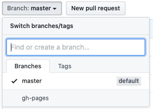
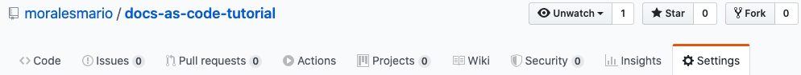
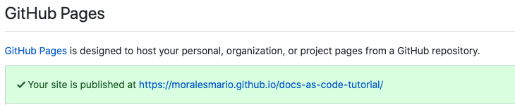
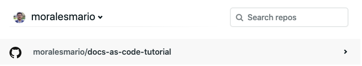

Deploying to a Static Site Hosting Service
This section provides you with three different options to deploy and automate your deploy process to a site hosting service.
Deploying to GitHub Pages
Deploying to GitHub Pages is the easiest way to host your documentation project. You only need to run the following command in your project directory:
mkdocs gh-deploy.
MkDocs builds the static files and commits the changes to a new branch in your GitHub repository called gh-pages, which will be used by GitHub Pages as the documentation files source.
To verify that the branch has been created and to view your documentation site live:
- Go to GitHub and navigate to your documentation project repository.
- Click the Branch: dropdown menu and look for a new branch called
gh-pages. 
If you have it, that means that your docs are ready in GitHub Pages. - Click the Settings tab at the upper right corner: 
- Navigate to the GitHub Pages section, where you can find the link to your documentation project page. 
IMPORTANT: If you make changes to your documentation site, after pushing your changes to origin master, remember to run the mkdocs gh-deploy command to also update your GitHub pages with the latest changes.
Alternatives for Deploying
Deploying to an AWS S3 Bucket
To follow this approach:
- Login to Amazon Web Services or create a new account.
- Create an S3 bucket
- Configure the S3 bucket for static website hosting.
- To deploy your files to the site:
- You can upload the static files in the
sitefolder that you created with themkdocs buildcommand to the S3 bucket and your site is ready in the provided S3 website URL. - You can use the Amazon CLI to sync the
buildwith adeployto S3.- Install the AWS CLI
- Configure the AWS CLI
- Run the following command inside your project directory to start the build process and deploy to your S3 bucket:
mkdocs build && aws s3 sync site/ s3://<your-bucket-name>.
- You can upload the static files in the
Deploying to Netlify
To ensure a smooth deployment with Netlify, you need to add a new configuration file called requirements.txt in your main project directory with the following line as its content:
mkdocs>=0.9.0
Your project structure must be something like the following:
docs-as-code-tutorial
├── docs
| ├── index.md
| └── local-site.md
| └── repo.md
| └── deploy.md
├── .gitignore
├── mkdocs.yml
└── requirements.txt
To connect your repository with Netlify:
- Log in to Netlify or create a new account.
- Click the New site from Git button.
- Click the GitHub button.
- Click Continue.
⚠ IMPORTANT: Don't click the Authorize button if you are asked to authorize access to the Organization you belong to. You will grant access later only to your personal account. - Click the Configure Netlify on GitHub button.
- Click your username when prompted.
- Click the Only select repositories option.
- Select the name of your repository you just created from the dropdown list.
- Click Install.
- Click the name of your repository under your username to go to the build and deploy options.
 - Under the Deploy settings:
- Leave Owner as default.
- Branch to deploy:
master. - Build command:
mkdocs build. - Publish directory:
site/.
- Click the Deploy site button.
The deploying process starts. When finished, Netlify gives you the address where your site is deployed. Every time you commit your changes and push them to your remote Github repository, Netlify redeploys your site.